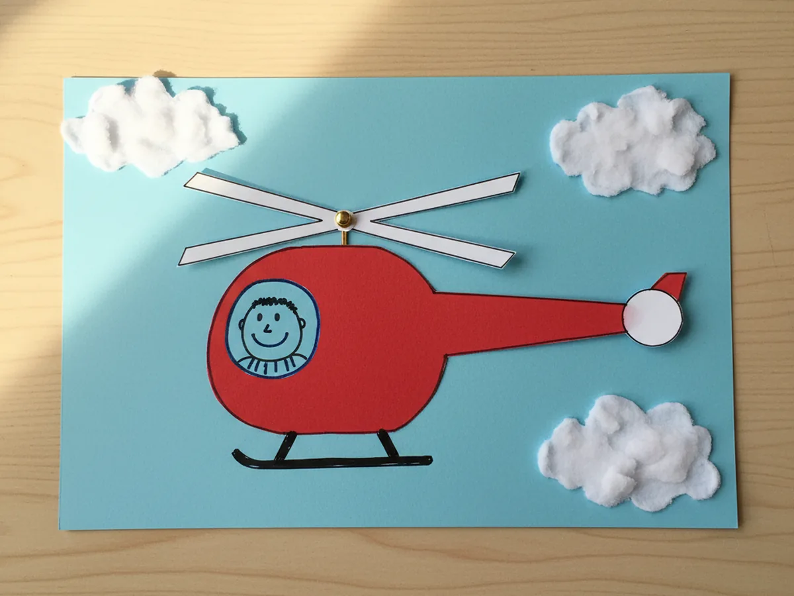
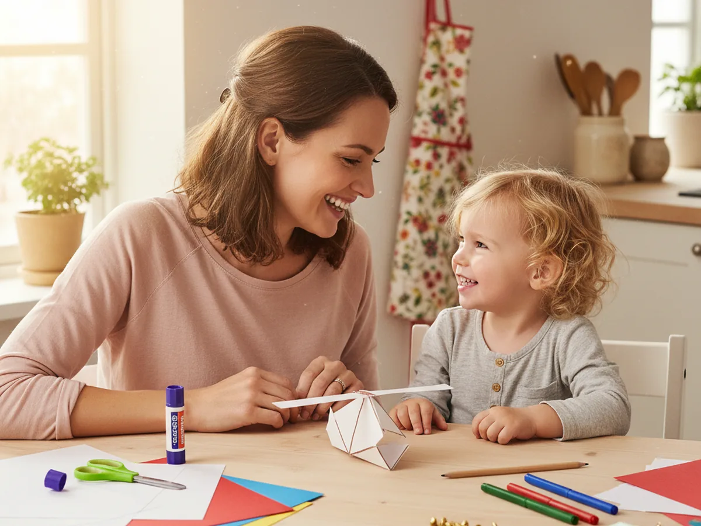
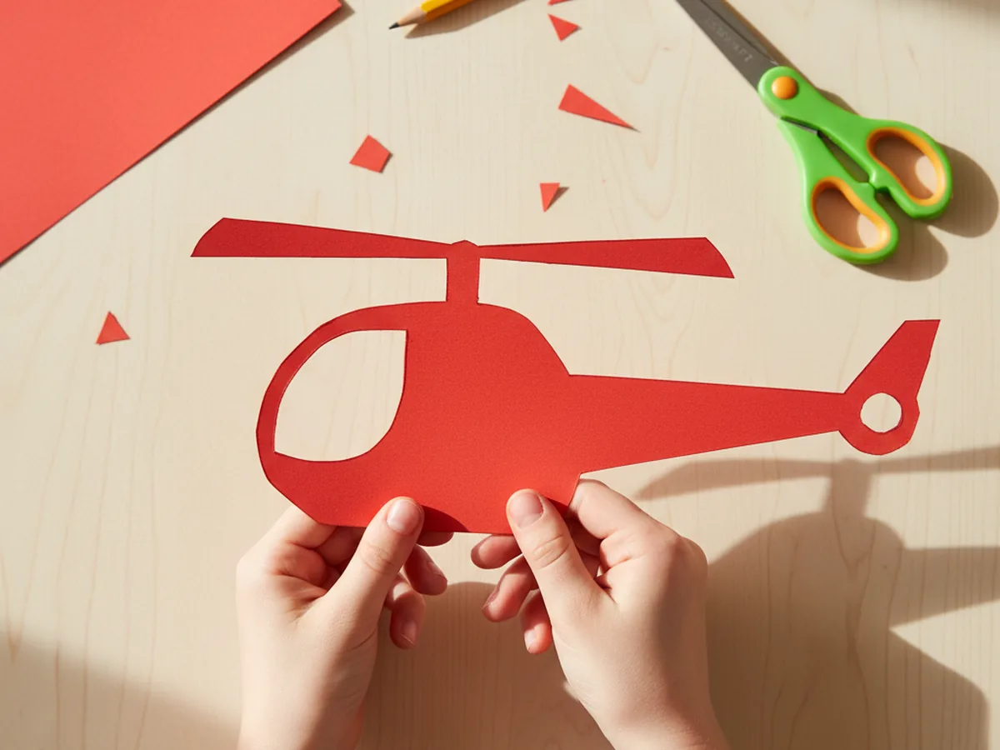
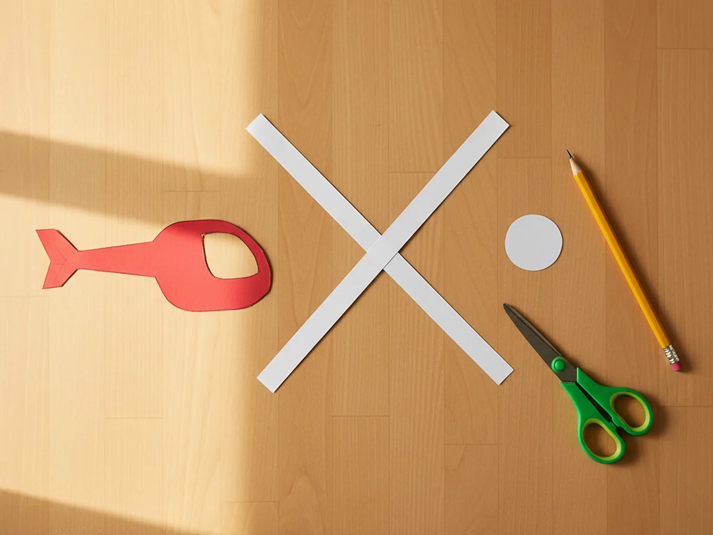
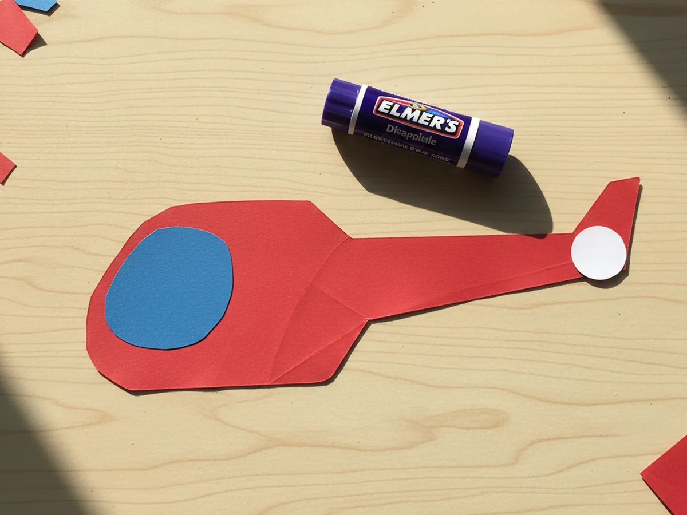
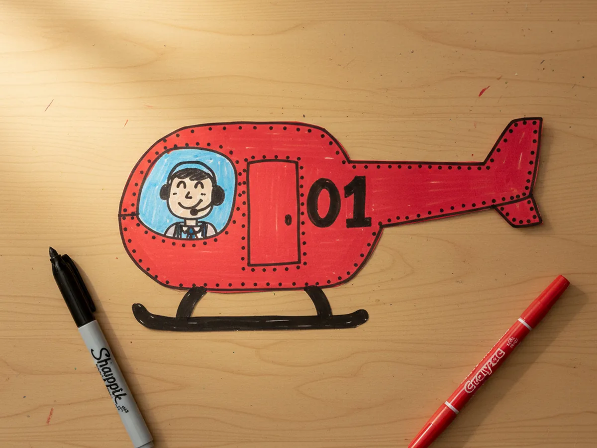
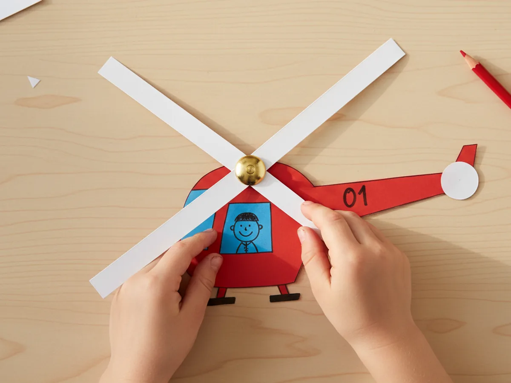
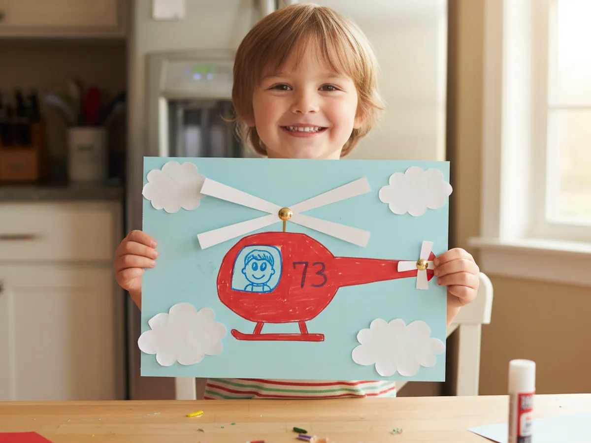

If your child loves anything that flies, this helicopter paper craft is about to become their new favorite afternoon project. With a few pieces of construction paper, a pair of safety scissors, and one little gold brad fastener, you can make a colorful helicopter with rotor blades that actually spin when you flick them. About 30 minutes, almost no mess, and one very proud little pilot at the end. ✈️
The best part about this paper helicopter craft is that the moving rotor turns a flat paper shape into something interactive. It is the kind of craft that gets played with long after the glue is dry. Kids fly it around the living room, land it on the coffee table, and ask to make a second one in a different color so a friend can have their own.
Why Kids Love This Craft
Kids love this helicopter paper craft because the moment the rotor starts to spin, the paper turns into a real toy. There is something magical about pressing a finger on the brad and watching the blades whirl around in a blur. That tiny bit of motion makes a young child light up every single time, and the helicopter goes from "a thing we made" to "a thing we play with" in one happy second.
The project also quietly builds skills along the way. Tracing the helicopter body helps with early pencil control. Cutting along curves works on scissor confidence. Pushing the brad through the rotor and the body teaches careful precision and gives a wonderful little reward when the blades suddenly spin. The pretend play that follows builds storytelling, narrative, and language too. Soon your child is rescuing toys from the rug or delivering pretend pizzas from the helipad on the kitchen counter.
Then there is the connection. Sitting side by side, sharing the scissors, taking turns flicking the blades, and laughing when the helicopter makes its first wobbly flight is exactly the kind of small, sweet moment that sticks in a child's memory. A simple paper helicopter craft can carry a surprisingly big amount of joy. 🚁

What You'll Need
Here is everything you need to make this helicopter paper craft together at home. Set the supplies out before your child sits down so the whole project flows from start to finish without anyone bouncing up to hunt for the scissors.
- Crayola Construction Paper (240 Sheets, 12 Colors), gives you red, blue, white, and yellow to mix and match for the helicopter body and rotor blades.
- Astrobrights Colored Cardstock Primary 5-Color Assortment, sturdier 65 lb cardstock keeps the helicopter body crisp so the rotor spins smoothly.
- Fiskars 5 Inch Pointed-Tip Kids Scissors, safe blades that handle curves and corners with ease.
- Elmer's Disappearing Purple Washable Glue Sticks (18 Pack), dries clear and washes off little fingers easily.
- AIEX Brass Brads Paper Fasteners (600 Pieces), the secret to the spinning rotor, just one round head brad makes the blades twirl.
- Crayola Broad Line Markers (10 Classic Colors), for the cockpit window, flight number, and pilot details.
- Sharpie Fine Point Permanent Markers (Black, 12 Count), perfect for tiny outlines, rivets, and crisp lettering.
- A pencil, for sketching the helicopter shape before cutting.
Step-by-Step Instructions
This helicopter paper craft comes together in six gentle steps a four year old can mostly do alone with a little help on the brad. Take it slow, talk through each piece, and enjoy the build together. 💛
Step 1: Draw and Cut the Helicopter Body
Start by drawing the helicopter body shape on a sheet of bright red or yellow cardstock. Picture a rounded cockpit bubble on the left, a thick mid body in the middle, and a long thin tail boom that stretches out to the right and ends in a small disk. Keep the whole shape gentle and curvy, about 9 inches long from nose to tail. Once the pencil outline looks right, hand the scissors to your child and let them cut along the line. Wobbly edges are completely fine and only make this paper helicopter craft look more handmade and friendly.

Step 2: Cut the Rotor Blades and Tail Rotor
Now cut the parts that will spin. From a sheet of white or yellow paper, cut two long thin strips about 6 inches long and three quarters of an inch wide. These are the two main rotor blades. Then cut a small circle about the size of a quarter from the same color paper for the tail rotor. Lay the two strips into an X shape on the table so you can see exactly what the spinning rotor will look like once it is attached. This is one of those moments where the helicopter paper craft suddenly starts to feel real.

Step 3: Glue the Tail Rotor and Cabin Window
Now bring out the glue stick. Run a small dab of glue on the back of the small paper circle and press it onto the end of the tail boom, right where the cartoons always show the little tail rotor. Then cut a soft rounded square or half circle from a piece of blue paper for the cockpit window and glue it onto the front cabin area of the helicopter. The helicopter body is starting to look like a real chopper, and your child will instantly see the transformation. Keep the spinning rotor blades aside for now, those go on last.

Step 4: Add Fun Details With Markers
Now the helicopter gets its personality. Use a black fine point marker to outline the helicopter body cleanly and add little rivet dots around the edge of the cabin. Draw two small landing skids underneath, one set of curved lines that looks like the helicopter is resting on legs. Add a flight number or a name on the side, like 01, RESCUE, or your child's initials. Inside the blue cockpit window, draw a smiling pilot peeking out with a little headset on. Even small markers details transform the helicopter paper craft from a paper shape into a character.

Step 5: Attach the Spinning Rotor With a Brad
This is the magic step. Take the two long thin rotor blades and cross them into an X shape. Use the pointed pencil to gently poke a small hole through the very center of both blades where they cross. Then poke another small hole in the top center of the helicopter body, just above the cabin. Slide a gold brass brad through the center of the rotor X first, then push it down through the hole in the helicopter body. Flip the helicopter over and open the two flat brad legs apart so the brad stays put. Now flip it back, give the rotor a gentle flick, and watch the blades spin. The whole room cheers.

Step 6: Mount on a Sky Background and Take Off
Give your helicopter a happy place to live. Cut a large sheet of light blue cardstock to use as the sky background, then cut three or four fluffy white paper cloud shapes and glue them onto the blue sky in a loose, drifting pattern. Place the finished helicopter onto the sky with the rotor still free to spin, and add a small dab of glue only on the body so the rotor stays movable. Hang the helicopter paper craft on the fridge, the bedroom wall, or the playroom door. Every time your child walks past, they can give the blades a flick and watch the helicopter take off. 🌤️

Variations to Try
Rescue Helicopter Mission: Make a red rescue helicopter and cut a tiny paper stretcher or basket to dangle from the bottom on a piece of string. Your child can pretend to lift a small stuffed animal or LEGO figure to safety, turning the craft into a full pretend play scene.
Magnetic Fridge Helicopter: Skip the sky background and instead glue a small adhesive magnet on the back of the helicopter body. Stick it on the fridge and let your child move the helicopter around like a flying toy whenever they walk past. The spinning rotor still works.
News Chopper for Older Kids: Older kids who want a more grown up version can use black cardstock for a sleek news chopper with a tiny camera glued to the side, a chunky antenna on top, and a station name written on the body. It feels like an upgrade and gives big siblings their own version of the craft.
Final Thoughts
This helicopter paper craft is exactly the kind of project that earns its place in the keep box at the end of the day. It is quick to set up, easy to follow, and the spinning rotor gives kids the same kind of delight as a real toy. The whole thing takes less than half an hour, uses paper you most likely already have, and turns into a flying friend your child will keep playing with all week long.
If your little pilot loved this craft, save the tutorial on Pinterest so you can pull it back out next time you need a quiet, joyful afternoon together. Happy crafting, friend.
More Crafts You'll Love
If your child loved making this helicopter, they will adore these other flying and spinning paper projects next: